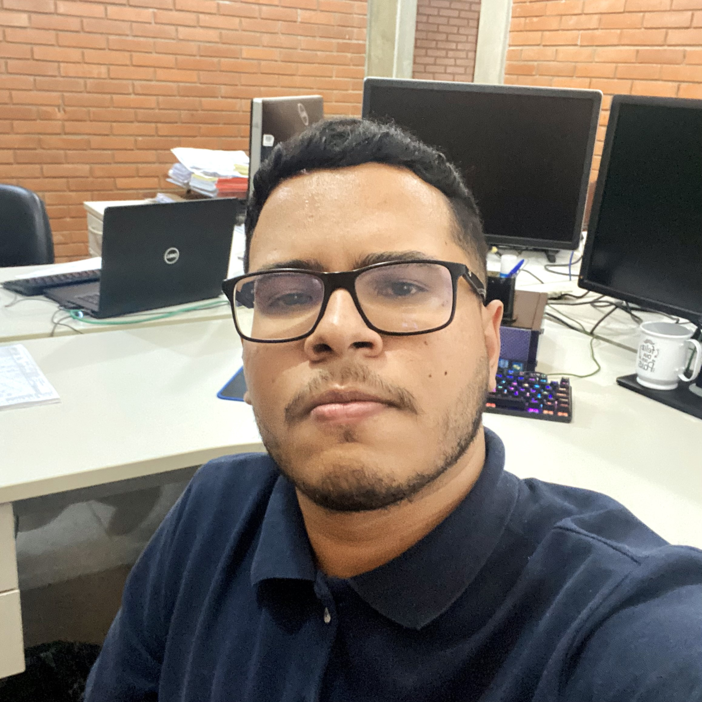

Lucas Menezes Mendes

Técnico em eletroeletrônica,
cursando em Análise e Desenvolvimento de Sistemas e futuro desenvolvedor full stack.
Portfólio
Trabalho realizado para a disciplina de Lógica de Programação e Algoritmos do curso de Análise e Desenvolvimento de Sistemas:
Repositório Github
Contato
Sobre mim
Sou um indivíduo com uma profunda paixão pela tecnologia, jogos eletrônicos e música. Atualmente, estou imerso no mundo acadêmico, cursando Análise e Desenvolvimento de Sistemas, uma escolha que aprofundou minha compreensão do universo tecnológico e minha capacidade de resolver problemas de forma eficaz.
Minha jornada na área técnica começou com uma formação em eletroeletrônica, que me proporcionou uma base sólida em eletrônica e sistemas elétricos. Esse conhecimento desempenhou um papel fundamental na minha transição para o campo da tecnologia, onde fui capaz de aplicar princípios e habilidades técnicas de maneira ampla.
O meu desejo de me tornar um desenvolvedor full stack tem sido uma das principais motivações na minha busca por aprimoramento. A combinação de tecnologia, criatividade e resolução de problemas é o que me atrai nesse campo. Desde o desenvolvimento front-end, com foco na experiência do usuário, até o back-end, onde as engrenagens do sistema se movem, estou determinado a abranger todas as facetas do desenvolvimento de software.
Além dos meus compromissos acadêmicos e profissionais, também encontro alegria em mergulhar em jogos eletrônicos. Eles representam um campo onde desafios e diversão se encontram, proporcionando uma válvula de escape para minha curiosidade e espírito competitivo.
A música é outra paixão que nutro desde muito jovem. Seja ouvindo, tocando um instrumento ou compondo minhas próprias músicas, a música é um elemento constante na minha vida. Ela oferece um espaço de expressão criativa e uma forma de comunicação única.
Todas essas paixões me moldaram e me inspiram constantemente a aprender, crescer e explorar novos horizontes. Minha busca por desafios tecnológicos e soluções inovadoras é um reflexo do meu desejo de causar um impacto positivo no mundo da tecnologia e do desenvolvimento. No entanto, minha jornada está longe de terminar, pois a evolução constante é uma parte fundamental do meu compromisso com o aprendizado e a inovação.